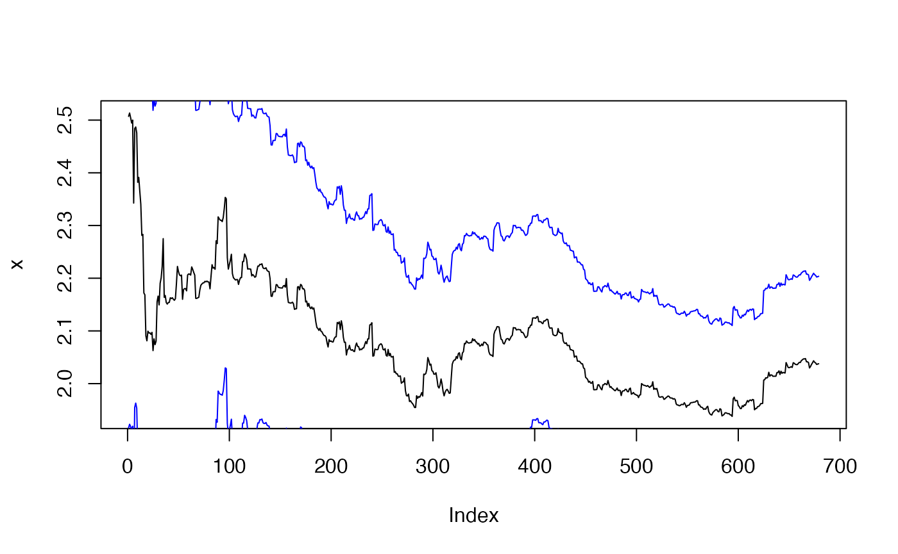
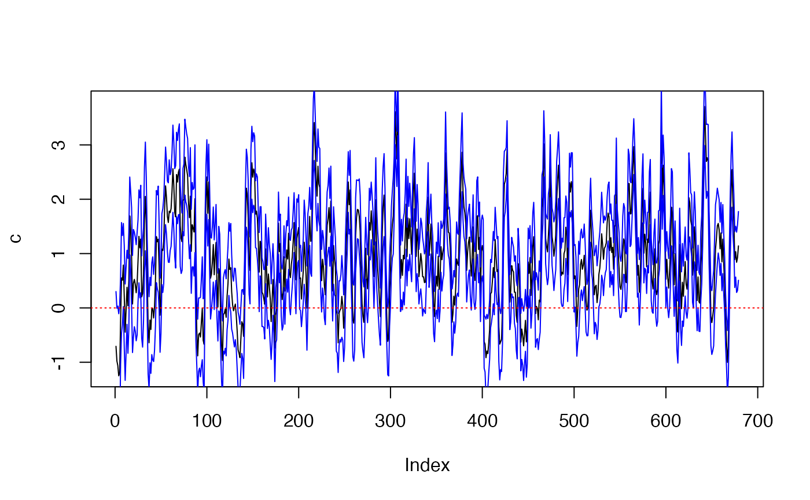

plot.KFS=function(KFS_out,selection=NULL,range=NULL){
if(class(KFS_out)!="KFS"){stop("The result is not a KFS object.")}
if(is.null(selection)){selection=1:ncol(KFS_out$att)}
if(is.null(range)){range=1:nrow(KFS_out$att)}
if(!all(selection %in% 1:ncol(KFS_out$att))){stop("The selected column overflow the #variables")}
for(id in selection){
plot.KFS_each(KFS_out,id,range=range)
}
}
plot.KFS_each=function(KFS_out,k,range){
sd_temp=sqrt(KFS_out$Ptt[k,k,])
plot(KFS_out$att[range,k],ylab=colnames(KFS_out$model$T)[k],type="l")
lines(KFS_out$att[range,k]+1.65*sd_temp[range],col="blue")
lines(KFS_out$att[range,k]-1.65*sd_temp[range],col="blue")
abline(h=0,lty=3,col="red")
cat(colnames(KFS_out$att)[k],": ",KFS_out$att[max(range),k]," (",KFS_out$att[max(range),k]-1.65*sd_temp[max(range)],",",KFS_out$att[max(range),k]+1.65*sd_temp[max(range)],").\n",sep="")
}
library(KFAS)
#> Please cite KFAS in publications by using:
#>
#> Jouni Helske (2017). KFAS: Exponential Family State Space Models in R. Journal of Statistical Software, 78(10), 1-39. doi:10.18637/jss.v078.i10.
library(ssmimputedemo)
#> Loading required package: tibble
#> Loading required package: changepoint
#> Loading required package: zoo
#>
#> Attaching package: 'zoo'
#> The following objects are masked from 'package:base':
#>
#> as.Date, as.Date.numeric
#> Successfully loaded changepoint package version 2.2.3
#> See NEWS for details of changes.
#> Loading required package: dlm
#> Loading required package: tidyverse
#> ── Attaching packages ─────────────────────────────────────── tidyverse 1.3.1 ──
#> ✔ ggplot2 3.3.6 ✔ purrr 0.3.4
#> ✔ tidyr 1.2.0 ✔ dplyr 1.0.9
#> ✔ readr 2.1.2 ✔ forcats 0.5.1
#> ── Conflicts ────────────────────────────────────────── tidyverse_conflicts() ──
#> ✖ ggplot2::%+%() masks dlm::%+%()
#> ✖ dplyr::filter() masks stats::filter()
#> ✖ dplyr::lag() masks stats::lag()
#> Loading required package: imputeTS
#> Registered S3 method overwritten by 'quantmod':
#> method from
#> as.zoo.data.frame zoo
#>
#> Attaching package: 'imputeTS'
#> The following object is masked from 'package:zoo':
#>
#> na.locf
head(data_stationary)
#> Date y x c
#> 1 2019-10-11 28.85889 10.221980 5.347277
#> 2 2019-10-12 26.27234 10.587153 6.303738
#> 3 2019-10-13 26.81705 9.596714 7.729045
#> 4 2019-10-14 28.97980 8.719379 6.664810
#> 5 2019-10-15 31.43034 8.730871 6.416177
#> 6 2019-10-16 31.28138 11.170906 3.822235
# function for exploration
run_exploration =function(formula = "y ~ x + c", data.input = data_stationary, method.input = "BFGS"){
resp = str_split(formula, " ~ ")[[1]][1]
#print(resp)
f = str_split(formula, " ~ ")[[1]][2]
#print(f)
n_variables = length(str_split(f, " \\+ ")[[1]])
print(n_variables)
col_list = colnames(data.input)
#print(col_list)
var_list = c(resp,str_split(f, " \\+ ")[[1]])
#print(var_list)
#print(mean(var_list %in% col_list))
if (mean(var_list %in% col_list)!=1){
stop("variables in the formula are not found in the input data")
}else{
model2_c_test=SSModel(data.input[,c(resp)] ~ -1 +
SSMregression(as.formula(paste("~ ",f, sep = " ")),data=data.input,Q=diag(rep(NA,n_variables))),
data.input,H=NA)
model2_c_fit=fitSSM(model2_c_test, inits =rep(0,n_variables+1), method = method.input) # n_variables + one NA in H
model2_c_out=KFS(model2_c_fit$model)
plot.KFS(model2_c_out,range=30:708)
}
return(model2_c_out)
}
run_exploration(formula = "y ~ x + c", data.input = data_stationary)
#> [1] 2
#> x: 2.037768 (1.871893,2.203644).
#> c: 1.141605 (0.5090995,1.77411).
#> Smoothed values of states and standard errors at time n = 1000:
#> Estimate Std. Error
#> x 1.94541 0.09587
#> c 1.28384 0.44634